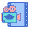

Hobbies
Ik geloof dat hobby’s een belangrijk onderdeel zijn van een gezond en evenwichtig leven. Ze helpen me ontspannen na een drukke dag, verbeteren mijn creativiteit en houden mijn geest actief. In de loop der jaren heb ik veel activiteiten uitgeprobeerd, maar een paar daarvan zijn een betekenisvol onderdeel van mijn dagelijkse routine geworden. Mijn belangrijkste hobby’s zijn lezen, reizen en naar muziek luisteren. Elke hobby leert me iets nieuws en geeft kleur aan mijn leven.
Hiriketiya
Hiriketiya
Ahangama
Mirrisa
Gims
Aarde
 Zwemmen
Zwemmen
Zwemmen is een van mijn favoriete hobby’s. Ik ben geboren op een eiland, waardoor ik van jongs af aan een sterke band met water heb ontwikkeld. Ik ben geen professional, maar ik heb als amateur leren zwemmen in rivieren en in de zee in Sri Lanka.
Toen ik daar woonde, ging ik bijna elk weekend zwemmen, behalve tijdens de moessonperiode. In die periode gingen we vaak met vrienden naar meren. Dat was nog leuker, vooral wanneer het hard regende. Het gaf een uniek en avontuurlijk gevoel.
Later begon ik met freestyle-technieken, die ik mezelf aanleerde via instructievideo’s op YouTube. Nu probeer ik mijn techniek steeds verder te verbeteren door regelmatig te oefenen.
Zwemmen geeft mij vrijheid, ontspanning en nieuwe energie.
Muziek
Muziek speelt een belangrijke rol in mijn leven.Ik luister elke dag naar muziek tijdens het werken, studeren of ontspannen.Daarnaast ben ik ook gek op Franse liedjes, ook al begrijp ik de teksten meestal niet. Toch voel ik de emotie en de sfeer in de muziek. Mijn favoriete genres zijn pop, klassiek en softrock.
Muziek helpt me gefocust te blijven tijdens het werk en motiveert me wanneer ik sport. Ik geloof dat muziek mensen met elkaar verbindt, voorbij taal en cultuur.
 Educatieve documentaires
Naast mijn belangrijkste hobby’s kijk ik ook graag naar educatieve documentaires. Ik ben vooral geïnteresseerd in films over de natuur op onze planeet — van het ijskoude Antarctica tot de uitgestrekte wildernis van Siberië.
Daarnaast kijk ik graag documentaires over de ruimte en het universum. Dat fascineert mij enorm. Onderwerpen zoals zwarte gaten, verre sterrenstelsels en planeten die lijken op de aarde vind ik bijzonder spannend. Het idee dat er misschien ergens anders leven kan bestaan, maakt mij nieuwsgierig om nog meer te leren. Soms lees ik artikelen of kijk ik extra video’s om beter te begrijpen hoe het heelal werkt en welke geheimen het nog verbergt. Deze documentaires helpen mij niet alleen ontspannen, maar laten mij ook dromen over de wonderen buiten onze wereld.